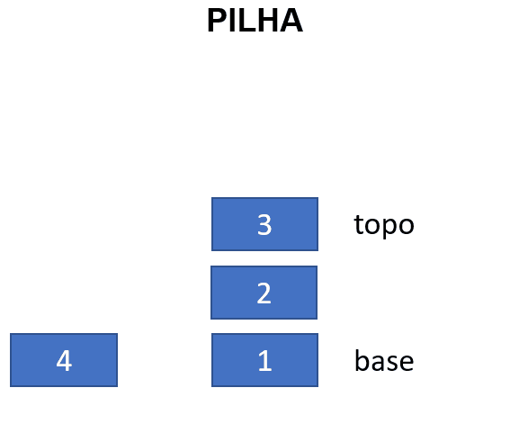
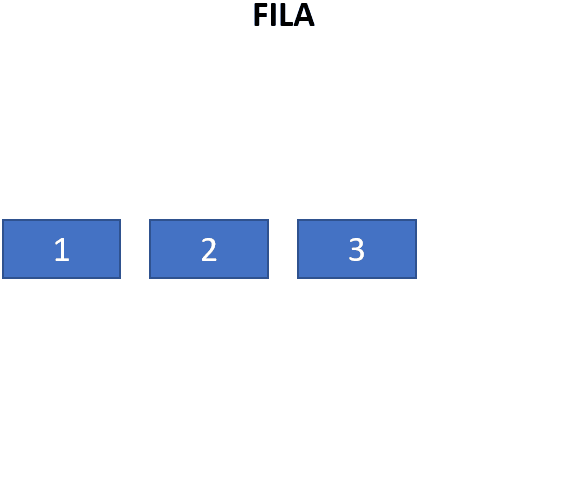
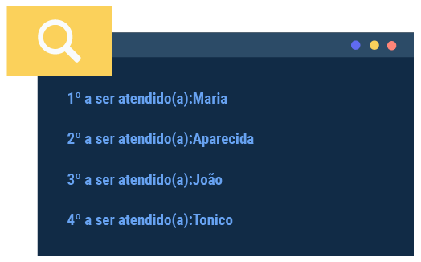
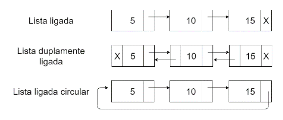
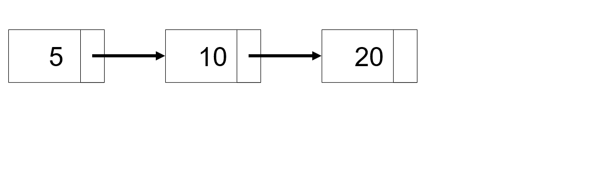
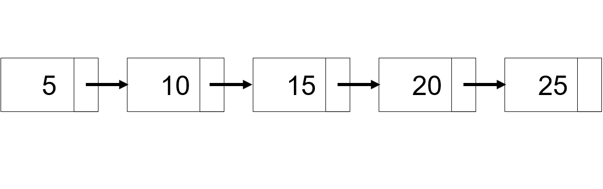
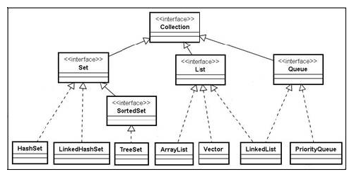

Como sugestão, configure a opção de leitura de caracteres e de pontuação de seu leitor de tela para o grau máximo de leitura, para que os códigos disponibilizados neste material sejam lidos corretamente. No caso do NVDA (Nonvisual Desktop Access), para localizar a opção Grau de pontuação/símbolos, acesse Preferências – Configurações – Fala. Altere o padrão Pouco para Tudo. Dessa forma, o leitor passará a ler os segmentos de código em sua totalidade.
Estruturas de dados são meios de organizar e manipular informações de modo que as operações sobre elas sejam eficientes. Por exemplo, é muito mais eficiente e intuitivo manipular uma série de números em um vetor do que em muitas variáveis separadas. Além de prover uma maneira de guardar informações, as estruturas devem permitir operações para acesso e manipulação desses dados. No caso dos vetores, os índices permitem um acesso rápido à determinada informação.
Sem conhecer estruturas de dados, o programador pode escrever programas e chegar a uma solução correta, mas que provavelmente será menos eficiente do que se aplicasse a estrutura adequada.
As classes em si são um tipo de estrutura de dados que guardam informações e permitem a criação de métodos para manipulá-las. É a partir de classes que muitas outras estruturas de dados são possíveis, como listas ligadas, árvores, pilhas, filas, entre outras.
Apesar de ser possível implementar cada estrutura, a biblioteca padrão Java (geralmente sob o pacote java.util) já traz classes prontas para várias estruturas de dados de maneira simples. A seguir, observe algumas das principais estruturas, ressaltando o conceito e a aplicação de cada uma.
Para um bom aproveitamento, siga esta leitura realizando e testando os exemplos demonstrados. Crie um projeto no NetBeans para cada exemplo ou modifique um código já existente. Execute, realize modificações e teste para entender como cada estrutura funciona.
Antes de analisar as estruturas de dados implementadas em Java, é preciso entender um conceito utilizado por boa parte dessas classes. Generics é a capacidade de parametrizar uma classe com um ou mais tipos específicos com os quais ela trabalhará.
Para compreender generics, é necessário entender que toda classe em Java deriva implicitamente da classe Object. Ela é a base de tudo, e, sendo assim, qualquer classe pode ser referenciada como Object. Por exemplo, considere a interface Comparable de Java, usada para forçar uma implementação de um método de comparação padronizado em uma classe. Sua assinatura original, antes da versão 1.5 do JDK, era a seguinte:
package java.lang;
public interface Comparable {
public int compareTo(Object o)
}
Note que o parâmetro é Object e, por ser o tipo base para todas as classes, aceita objeto de qualquer classe como parâmetro. Sabendo que a classe Date de Java implementa a interface Comparable, é possível aplicar o seguinte trecho de código:
Comparable c = new Date();
System.out.println(c.compareTo("red"));
Note que está sendo feita a comparação de c (tipo Date) com um texto (“red”) passado pelo parâmetro de compareTo(). O resultado disso (e você pode experimentar em seu computador) é um erro em tempo de execução – ou seja, apenas quando você executar o código, verá o problema: class java.lang.String cannot be cast to class java.util.Date ou “classe String não pode ser convertida para classe Date”.
A partir de JDK 1.5, com generics, a interface de Comparable ganha uma possibilidade nova:
package java.lang;
public interface Comparable<T> {
public int compareTo(T o)
}
Note o <T> presente logo após o nome da interface. Observe ainda que compareTo() ao invés de Object recebe esse tipo hipotético T como parâmetro. T, nesse caso, é um tipo genérico (e, na realidade, ao invés de T, poderia ser qualquer termo entre < e >) que pode ser referenciado no código da interface ou da classe, como é no parâmetro de compareTo(). Ao criar um objeto de classe com generics, informe no lugar o T um tipo concreto (outra classe). O trecho de código para testar a comparação de Data com string ficaria como o seguinte exemplo:
Comparable<Date> c = new Date();
System.out.println(c.compareTo("red"));
Note o tipo Comparable<Date>. Aqui, fica demonstrado que se espera o tipo date para certas operações dessa interface Comparable. Qual é a vantagem dessa abordagem em relação à anterior? A maior vantagem é que a falha de conversão continua acontecendo, mas é anunciada em tempo de compilação, ou seja, o código não executará com erro para o usuário. Caso você esteja usando NetBeans, note que, com o código mostrado, a linha com compareTo("red") fica grifada com a mensagem de erro “Incompatible types” (ou “tipos incompatíveis”).
O exemplo apresentado esclarece a função do generics: tipificar fortemente algumas operações ou dados de uma classe ou interface, de maneira que o tipo informado seja obedecido e verificado em tempo de compilação e não de execução. Além disso, o uso de generics deixa o código mais claro.
A classe ArrayList, usada para lista não limitada de dados, é uma das várias em Java que contém uma versão generics. Assim, observe os códigos a seguir:
ArrayList minhaLista = new ArrayList();
Esse código fica menos claro e mais suscetível a erros em tempo de execução do que este:
ArrayList<Integer> minhaLista = new ArrayList<Integer>();
Esse deixa explícito que minhaLista é uma lista de números inteiros.
Repare que se utilizou integer ao invés de int no parâmetro generic de ArrayList. Isso porque só se pode usar classes, não tipos primitivos, entre < e > em uma declaração de generics.
Crie um projeto Java e inclua a seguinte classe CGenerica:
class CGenerica<T>
{
private T data;
public static T getData(){
return data;
}
public static T getData(){
return data;
}
}
No método main() do projeto, utilize essa classe com integer, string e date.
Pilhas são listas de valores que simulam uma pilha de objetos. Pense, por exemplo, em pratos empilhados em um restaurante que oferece serviço de bufê. Você pegará o prato do topo dessa pilha, e não o da base. Os funcionários do restaurante farão a reposição incluindo novos pratos acima do que está no topo.
Da mesma maneira acontece com uma estrutura de dados pilha: um valor, quando é incluído, vai ao topo da pilha e, quando é retirado, também sai do topo. Daí a denominação comum de que se trata de uma estrutura LIFO (last in, fist out, ou “último a entrar, primeiro a sair”). Isso significa que o último valor incluído é o primeiro a ser excluído.
As pilhas utilizam apenas as operações de empilhar (geralmente chamado push), para incluir dados, e desempilhar (pop), para excluir; geralmente ainda acompanham de um método peek, usado para verificar qual valor está no topo da pilha sem retirá-lo, como mostra o gif a seguir:
O gif exemplifica uma pilha. Ao centro, há três caixas: uma com número 3, abaixo dela, número 2, e, abaixo, número 1. Ao lado de “3” está a palavra “topo” e, ao lado de “1”, a palavra “base”. À esquerda, surge a expressão “push()” e uma caixa com o número 4. Em seguida, essa caixa se move até acima de “3” e “topo” passa para o lado de “4”. Depois apaga-se “pop()” e surge a expressão “push()”. O “4” sai do topo da pilha e a palavra “topo” volta a descer para “3”.
Um uso clássico de pilhas acontece no próprio sistema operacional. Processos de sistema geralmente iniciam outros processos, que iniciam outros. Constrói-se assim uma pilha de processos, uma vez que o último processo iniciado deve ser finalizado para que o anterior (que chamou o último) possa ser processado ou finalizado, e assim por diante.
Outra aplicação clássica de pilhas acontece nos compiladores, para verificar a abertura e o fechamento de parênteses em uma expressão lógica, por exemplo. Assim, por meio de uma pilha de caracteres, seria possível validar a seguinte expressão:
(x * (y - 2) / (10 + z)))
É possível percorrer a expressão e usar pilha para empilhar valor ao encontrar o caractere “(” e desempilhar ao encontrar o caractere “)”. Se a expressão estiver correta, a pilha estará vazia ao final. No exemplo mostrado, esse algoritmo indicaria que a expressão está incorreta, pois, ao alcançar o último caractere, a pilha já estará vazia.
Em qualquer situação análoga em que a última informação incluída tenha que ser processada antes que a anteriormente incluída, é possível aplicar pilhas.
Java implementa pilha por meio da classe Stack, presente no pacote java.util. A declaração de um objeto Stack de números inteiros fica como o exemplo a seguir:
Stack<Integer> pilha = new Stack<Integer>();
Os principais métodos de Stack são:
Retorna verdadeiro se a pilha está vazia.
Retorna o valor presente no topo da pilha.
Retira o item do topo, retornando seu valor.
Adiciona um novo elemento do tipo T (definido pelo generics) no topo da pilha.
Retorna a posição de determinado elemento.
Imagine que você precisa implementar um código para organizar e determinar quais carros devem sair de um caminhão-cegonha. Os carros estão enfileirados, mas o último a entrar será o primeiro a sair.
Nesta aplicação, será solicitado o nome de cada carro e depois deverá ser apresentada a ordem em que eles sairão do caminhão. Para simplificar, considere apenas um dos andares do veículo de transporte.

Figura 1 – Caminhão-cegonha
Fonte: Ohana Transportes de Veículos (s.d.)
A imagem mostra um caminhão-cegonha carregando vários carros, um atrás do outro, em dois andares.
Crie um novo projeto Java ou reescreva o método main() de algum já existente com o seguinte código.
import java.util.ArrayList;
import java.util.Date;
import java.util.Scanner;
import java.util.Stack;
public class TesteStack {
public static void main(String[] args) {
Scanner entrada = new Scanner(System.in);
String carro, continuar = "S";
//declaração da pilha
Stack<String> cegonha = new Stack<String>();
while(!continuar.equals("N"))
{
System.out.println("Digite o nome do próximo carro a entrar no caminhão cegonha: ");
carro = entrada.nextLine();
//incluindo o carro na pilha
cegonha.push(carro);
System.out.println("Continuar informando dados? S/N");
continuar = entrada.nextLine();
}
System.out.println("Retirar os carros nesta ordem:");
while(!cegonha.empty()) //enquanto ainda há elementos na pilha
{
//retira o item do topo
carro = cegonha.pop();
System.out.println(carro);
}
}
}
Teste com os valores “fusca”, “chevette” e “opala” para verificar que o resultado final será “opala, chevette, fusca”.
Implemente um programa Java em que o usuário informará números inteiros. Inclua o primeiro número em uma pilha e inclua os próximos apenas se for maior que último número informado. Depois, desempilhe os valores mostrando na tela cada um em sequência.
O que diferencia uma pilha de uma fila é a ordem em que os elementos são incluídos e excluídos da estrutura. Aqui, o primeiro valor incluído será o primeiro a ser retirado (FIFO – first in, first out).
As filas necessitam basicamente das operações de enfileirar (enqueue ou add) e desenfileirar (dequeue ou remove). O gif a seguir demonstra a inclusão do dado após o último elemento da fila; remove() exclui o primeiro item da fila.
O gif mostra os números 1, 2 e 3 em caixas, uma ao lado da outra. Surge a expressão “add()” acima e uma caixa “4” surge à direita de “3”. Apaga-se a expressão “add()” e surge “remove()”; a caixa “1”, mais à esquerda de todas, então se apaga.
As situações que envolvem o uso de fila são intuitivas. Uma fila de pessoas esperando para serem atendidas em um consultório médico, por exemplo, pode se beneficiar dessa estrutura de dados. Uma lista de documentos enviados para impressão também certamente implementa uma estrutura de dados fila, uma vez que o primeiro documento enviado deve ser também o primeiro a ser impresso e a ordem dos documentos deve ser preservada.
A interface Queue da biblioteca padrão Java representa uma fila e está presente no pacote java.util. Ela traz os seguintes métodos:
Inclui um valor (do tipo genérico T) na fila.
Remove o último elemento da fila, retornando seu valor.
Retorna o primeiro elemento da fila (o próximo a ser utilizado).
Por ser interface, Queue não pode ser instanciada diretamente. Ao invés disso, é necessário usar alguma de suas implementações.
Uma implementação de uso mais direto e que, na verdade, implementa outro tipo de estrutura de dados é a classe LinkedList. Essa classe implementa a interface Deque (double ended queue), que estende a interface Queue.
A interface Deque será detalhada em seguida neste material.
Como um primeiro exemplo, será implementada uma fila com nomes de pessoas a serem atendidas em uma clínica. A ordem de chegada delas será a ordem em que serão atendidas.
import java.util.LinkedList;
import java.util.Queue;
public class TesteQueue {
public static void main(String[] args) {
Queue<String> fila = new LinkedList<String>();
fila.add("Maria");
fila.add("Aparecida");
fila.add("João");
fila.add("Tonico");
int ordem = 1;
while(!fila.isEmpty())
{
String nome = fila.remove();
System.out.println(ordem + "º a ser atendido(a):" + nome);
ordem++;
}
}
}
O resultado desse código será o seguinte:
Essa é a implementação mais tradicional para fila. No entanto, existe ainda outra classe que implementa diretamente a interface Queue e que trabalha de uma maneira mais específica. PriorityQueue é uma fila que mantém sempre ordenados os seus elementos. Aplique PriorityQueue ao exemplo anterior e compare seu resultado. A alteração necessária no código aparece em destaque.
import java.util.PriorityQueue;
import java.util.Queue;
public class TesteQueue {
public static void main(String[] args) {
Queue<String> fila = new PriorityQueue<String>();
fila.add("Maria");
fila.add("Aparecida");
fila.add("João");
fila.add("Tonico");
int ordem = 1;
while(!fila.isEmpty())
{
String nome = fila.remove();
System.out.println(ordem + "º a ser atendido(a):" + nome);
ordem++;
}
}
}
Ao executar o programa, o resultado obtido será o seguinte:
1º a ser atendido(a):Aparecida
2º a ser atendido(a):João
3º a ser atendido(a):Maria
4º a ser atendido(a):Tonico
Note que, nesse caso, os pacientes seriam atendidos pela ordem alfabética de seus nomes, o que não seria adequado para a clínica, mas que serviu aqui para se entender a diferença entre o LinkedList e o PriorityQueue.
Escreva um programa Java que implemente uma fila de mensagens enviadas em um chat. Primeiro, obtenha do usuário ao menos cinco mensagens textuais e, ao final, apresente e descarte a sequência de mensagens na ordem correta.
Anteriormente, foi mencionado que LinkedList implementa uma interface chamada Deque. Trata-se de uma estrutura de dados específica que traz flexibilidade à fila, permitindo a inclusão e retirada tanto do início quanto do fim da fila.
Para isso, a interface oferece os seguintes métodos (evidentemente implementados por LinkedList):
Adiciona um elemento ao início da fila.
Adiciona um elemento ao fim da fila.
Remove o elemento do início da fila.
Remove o elemento do fim da fila.
Retorna o elemento no início da fila.
Retorna o elemento no fim da fila.
A estrutura de dados mais básica é o vetor (ou array), capaz de armazenar uma quantidade específica de valores em um espaço dedicado da memória, organizando-os sequencialmente. As limitações do vetor, como a incapacidade de expandir um vetor já declarado ou de eliminar um índice da estrutura, levaram à implementação de estruturas de dados que têm o mesmo propósito, mas que contam com mais flexibilidade.
Uma dessas estruturas é a lista ligada, em que os elementos estão conectados por meio de referências; ao invés de os valores estarem juntos em um bloco de memória, como acontece em um vetor, na lista ligada cada elemento está em uma parte da memória, apenas mantendo referência para o próximo elemento e, em algumas implementações, também para o anterior.

Figura 2 – Implementações de listas ligadas
Fonte: Senac EAD (2022)
A imagem mostra, acima, o rótulo “Lista ligada” e, à direita, uma caixa com o número 5, com uma flecha direcionada à outra com o número 10, à direita, que está com uma flecha direcionada à outra, com o número 15, também à direita. Esta última caixa traz um X à direita, indicando que não aponta mais nada. Abaixo, há o rótulo “Lista duplamente ligada” e inicia com caixa com um X à esquerda, o valor 5 e uma flecha para a caixa da direita; à direita, a caixa com o valor 10 tem uma flecha apontando à esquerda para a caixa de valor 5 e outra apontando para a caixa seguinte; à direita, a caixa com o valor 15 tem uma flecha à esquerda apontando para a caixa 10 e um X à direita. Abaixo, há o rótulo “Lista ligada circular” e inicia com caixa com valor 5 com flecha à direita apontando para a caixa 10, com flecha à direita apontando para 15, que traz à direita uma flecha que aponta de volta para a primeira caixa 5.
Como qualquer outra estrutura de dados, é possível implementar uma lista ligada a partir de classes simples, em que cada elemento é um objeto “nó”, que aponta para outro objeto “nó”.
Em um vetor de cinco posições, por exemplo, se você quiser incluir um sexto elemento, precisará criar novo vetor com mais posições, transferir todos os dados e incluir o novo valor. Se quiser excluir um item, é preciso remanejar os seguintes para a posição anterior.
Na lista ligada, no entanto, ao incluir um novo elemento, escolhe-se a posição na qual será adicionado, cria-se um novo elemento e atualiza-se o apontamento do elemento anterior para que se ligue ao próximo. Não é necessário recriar toda a estrutura. Confira o gif a seguir para compreender melhor:
O gif mostra caixas com os números 5, 10 e 20, uma à direita da outra e uma com flecha apontando de uma para a outra. Surge a caixa 25, à direita de 20; a caixa 20 cria uma flecha que aponta para 25. Surge uma caixa 15 abaixo; a caixa 10 apaga a flecha que aponta para 20 e cria uma flecha para a 15, da qual sai uma flecha apontando para 20.
Ao remover um item de lista ligada, simplesmente atualiza-se o apontamento do elemento anterior para o seguinte ao elemento removido. Veja mais detalhes no gif a seguir:
O gif mostra uma lista ligada com caixas 5, 10, 15, 20, 25, uma à direita da outra e cada uma com flecha apontando para a seguinte. Primeiro, a caixa 10 some; a flecha que apontava de 5 para 10 é substituída por uma flecha de 5 para 15. Depois a 25 some e a flecha que saía de 20 e apontava para 25 é excluída.
A flexibilidade da lista ligada vem a um custo: torna-se mais dispendioso buscar um valor na lista, já que é necessário percorrer item a item para encontrá-lo (por não ser uma estrutura contígua, os índices usados em vetores para acessar uma posição da estrutura não são aplicáveis aqui).
Essa não é a única implementação de uma estrutura sequencial flexível. Em alguns casos, a substituição de um vetor pode ser mais vantajosa que a lista ligada; em outros, pode-se combinar vetores e listas ligadas para usar alguns benefícios de ambas as estruturas.
Em qualquer formato que seja, as listas lidam com coleções de valores. Em algumas linguagens, como Java, essa coleção é necessariamente de valores do mesmo tipo (ou de um tipo derivado). Em boa parte das situações, vetores podem ser suficientes e com bom desempenho. Listas ligadas são recomendadas quando se necessita de flexibilidade de adição e remoção de itens, mas pouca busca de valores.
Java conta com uma estrutura de classes para lidar com conjuntos de dados, o Collections Framework. Trata-se de uma biblioteca de interfaces e classes, que abrange estruturas as quais manipulam coleções de elementos e também mapas, que são estruturas armazenando dados em pares chave/valor (ou seja, os valores são indexados por outro valor-chave).

Figura 3 – Diagrama de classes do Collections Framework de Java
Fonte: Araújo (2010)
A imagem mostra um diagrama UML de classes. Ao topo consta a interface “Collection” e, abaixo, derivam interfaces “Set”, “List” e “Queue”. Implementando “Set” estão as classes concretas “HashSet” e “LinkedHashSet”. Derivando de “Set”, há a interface “SortedSet” e, implementando-a, abaixo, a classe “TreeSet”. Implementando List estão “ArrayList”, “Vector” e “LinkedList”. Implementando “Queue” estão “LinkedList” e “PriorityQueue”.
A interface Collection é a base dessas classes. Em seguida estão a interface Set, para estruturas que armazenem dados não duplicados, e a interface List, para coleções em geral, além de Queue, para fila.
A interface List<T> traz operações gerais para manipulação de coleções, sendo alguns dos principais métodos:
Inclui um novo item ao final da lista (T é o tipo a ser definido pelo generic na classe).
Incluir um novo item no índice “i” da lista.
Retorna o valor presente no índice “i” da lista.
Retorna o índice do objeto “o” na lista ou -1, caso ele não exista.
Retorna verdadeiro quando a lista está vazia.
Remove o item presente no índice “i” da lista. Retorna o valor removido.
Remove o item “o” presente na lista; retorna falso se o objeto não está presente na lista.
Exclui todos os itens da lista.
Retorna o número de itens presentes na lista.
Naturalmente, qualquer classe que implemente direta ou indiretamente essa interface precisará implementar esses métodos.
As principais classes concretas de List são:
Seria possível dizer, de certo modo, que um objeto ArrayList é uma espécie de vetor sem limitações de tamanho, em que se pode incluir livremente um novo item na lista sem a preocupação com índices e com a capacidade do vetor. Também se pode excluir um item sem preocupações com índices e com realocação de valores.
Veja a seguir um exemplo de código Java que utiliza ArrayList para incluir e excluir nomes em uma lista de clientes de uma loja. O programa permite a inclusão e a exclusão de nomes, mostrando o estado atual da lista a cada iteração.
import java.util.ArrayList;
import java.util.List;
import java.util.Scanner;
public class ListaTeste {
public static void main(String[] args) {
Scanner entrada = new Scanner(System.in);
String nome, operacao = "I";
int indice;
List<String> clientes = new ArrayList<String>();
while(!operacao.equals("S"))
{
System.out.println("Digite a operação [I]ncluir, [E]xcluir, [S]air");
operacao = entrada.nextLine();
switch(operacao)
{
case "I":
System.out.print("Digite o nome: ");
nome = entrada.nextLine();
clientes.add(nome); //incluindo um novo nome na lista
break;
case "E":
System.out.print("Digite o indice: ");
indice = entrada.nextInt();
if(indice >= 0 && indice < clientes.size())//valida se o índice informado é válido
clientes.remove(indice); //excluindo o valor que está no índice informado
break;
case "S":
System.out.println("Encerrando o programa");
break;
}
System.out.println("A lista neste momento está assim: ");
for(int i = 0; i<clientes.size(); i++)
{
//em ArrayList, não se usa [] para acessar um item, mas sim método get()
System.out.println(clientes.get(i));
}
}
}
}
Note no exemplo que foi utilizada esta declaração:
List<String> clientes = new ArrayList<String>();
A declaração anterior foi utilizada ao invés da seguinte:
ArrayList<String> clientes = new ArrayList<String>();
Ambas, evidentemente, são corretas. A primeira declaração é possível por ArrayList implementar a interface List; no entanto, porque “clientes” está declarado com o tipo de List, só se terá acesso aos métodos declarados nessa interface. Caso se queira acessar métodos e atributos específicos da classe ArrayList, é preferível utilizar a segunda declaração.
Internamente, um ArrayList cria um vetor e o usa para armazenar os valores. Quando o vetor já não é mais suficiente, a classe cria outro novo vetor e descarta o antigo. De qualquer maneira, ao usar a classe, o programador não precisa se preocupar com esses detalhes técnicos.
Vector é uma alternativa que funciona quase exatamente igual ao ArrayList, com a diferença de ser thread-safe, ou seja, tem mecanismos que previnem problemas em aplicações multithread.
Uma aplicação multithread é aquela em que duas operações executam de modo paralelo, e não sequencial, como normalmente se programa. Cada linha paralela de execução é chamada thread.
Como analogia, pense em multithread como duas ou mais transações SQL rodando em paralelo. Alguns problemas semelhantes podem acontecer, como a utilização de um mesmo recurso por duas threads e o risco de uma sobrescrever a alteração que a outra realizou nesse recurso. O que o Vector faz é prevenir essas situações de risco, mas isso vem a um custo de processamento e, por isso, seu uso deve acontecer apenas quando o programa for realmente multithread, caso contrário, é preferível usar ArrayList.
Sua aplicação é quase idêntica à do ArrayList. Você pode testar trocando, no exemplo anterior, o tipo do objeto “clientes” para Vector<String>.
LinkedList (ou Listas Ligadas) foi apresentada anteriormente no contexto de filas. De fato, LinkedList implementa tanto a interface List<E> quanto Queue<E>. Assim, ela também traz os métodos padrão de List. Veja no exemplo a seguir a LinkedList sendo usada como uma lista comum para incluir notas de alunos de maneira ordenada.
import java.util.LinkedList;
import java.util.List;
import java.util.Scanner;
public class ListaLigadaTeste {
public static void main(String[] args) {
Scanner entrada = new Scanner(System.in);
List<Float> notas = new LinkedList<Float>();
notas.add(5.5f);
notas.add(7f);
notas.add(9.75f);
float novaNota = entrada.nextFloat();
int indice = 0;
//busca a posição correta em que a nova nota deve ser incluída
while(notas.get(indice) < novaNota && indice < notas.size())
{
indice++;
}
if(indice < notas.size()) //se não chegou ao final da lista...
notas.add(indice, novaNota);//...incluir na posição correta
else//senão...
notas.add(novaNota);//...incluir ao final da lista
System.out.print("Notas em ordem: ");
for(int i = 0; i<notas.size(); i++)
{
System.out.print(notas.get(i) + " ");
}
}
}
Por estarem sendo utilizadas List<Float>, as operações são idênticas às utilizadas com ArrayList. Internamente, no entanto, as operações ocorrem como demonstradas nos dois gifs anteriores.
A interface Set especifica operações para coleções de dados que não admitem duplicatas, ou seja, não pode haver valores repetidos no armazenamento. Essa estrutura permite uma pesquisa de dados mais rápida que List, mas a inclusão de dados é mais lenta.
Os principais métodos especificados por Set<E> são os seguintes:
Inclui o objeto “e” na coleção, caso o valor já não esteja presente.
Exclui todos os itens da coleção.
Retorna verdadeiro se o objeto “o” está presente na coleção.
Remove o objeto “o” da coleção, caso esteja presente.
As principais classes concretas de Set são:
HashSet são coleções que não garantem a ordem dos elementos – ou seja, a ordem deles pode mudar a cada inclusão –, mas que mantêm eficiência constante na busca por valores, independentemente da quantidade de itens incluídos. Internamente, a classe usa HashTable (ou tabelas de dispersão), uma estrutura que associa uma chave a um valor e que permite a eficiência na busca.
O exemplo a seguir mostra o uso de HashSet para cadastrar títulos de livros e depois permitir uma busca nessa coleção.
import java.util.HashSet;
import java.util.Scanner;
import java.util.Set;
public class HashsetTeste {
public static void main(String[] args) {
Scanner entrada = new Scanner(System.in);
Set<String> livros = new HashSet<String>();
String nomeLivro;
System.out.println("Primeiro inclua 7 títulos de livros");
for(int i=0; i<7; i++)
{
//incluindo novo valor informado pelo usuário
nomeLivro = entrada.nextLine();
livros.add(nomeLivro);
System.out.println("> Coleção agora: ");
for(String l : livros)
{
System.out.println(l);
}
}
System.out.println("Agora faça buscas. Digite PARE para encerrar");
nomeLivro = entrada.nextLine();
while(!nomeLivro.equals("PARE"))
{
//buscando o valor informado no HashSet
if(livros.contains(nomeLivro))
{
System.out.println("Valor '" + nomeLivro + "' foi encontrado.");
}
else
{
System.out.println("Valor '" + nomeLivro + "' não foi encontrado.");
}
nomeLivro = entrada.nextLine();
}
}
}
Teste o código Java apresentado. Ao incluir novos valores, perceba que eles nem sempre ficarão na ordem em que você os informou. Isso é natural com HashSet.
O laço for-each, presente no código anterior, será abordado em seguida, neste conteúdo.
A operação com TreeSet é semelhante à do HashSet, com a diferença de que, ao incluir um novo valor, a coleção é reordenada. Assim, TreeSet mantém sempre os valores em ordem. Internamente a classe utiliza uma estrutura de dados chamada árvore rubro-negra (red-black tree), que auxilia na eficiência da ordenação dos dados, por isso o nome TreeSet.
Para testar, use o mesmo exemplo anterior, trocando apenas a declaração do objeto “livros” para o tipo TreeSet:
Set<String> livros = new TreeSet<String>();
Ao executar o código, note que, após cada inclusão, a coleção se mantém ordenada.
Ao utilizar classes próprias (alguma classe criada por você) com TreeSet, será necessário implementar a interface Comparable e desenvolver o método compareTo(), que deve retornar -1 se o valor informado for anterior, 0 se for igual ou 1 se for posterior ao objeto atual. Assim, se você tivesse uma classe Livro para o exemplo anterior, com atributos “título” e “autor”, ela precisaria ficar mais ou menos assim:
public class Livro implements Comparable<Livro>{
public String titulo;
public String autor;
public int compareTo(Livro o) {
return this.titulo.compareTo(o.titulo);
}
}
É preciso implementar compareTo() comparando o título do objeto com o do livro informado por parâmetro. Internamente, TreeSet utiliza esse método compareTo() para a ordenação.
O laço for (“para”) é utilizado classicamente para iteração sobre os elementos de vetores. A partir da padronização de coleções, as linguagens de programação introduziram um novo tipo de laço específico para elas, normalmente chamado de for-each (“para cada”). A sintaxe no Java é a seguinte:
for(Tipo variavel : lista)
{
<código>
}
Um laço for-each itera automaticamente sobre os elementos de uma lista, sem necessidade de manipular índices. Em for-each, uma variável local é declarada com o tipo dos elementos da lista e é utilizada para receber, a cada iteração do laço, o valor do item atual na lista, passando ao próximo item no fim da iteração. É o que acontece no exemplo de uso do HashSet, no seguinte trecho:
for(String l : livros)
{
System.out.println(l);
}
HashSet não usa índices para referenciar seus valores. Assim, o laço for não seria suficiente para percorrer a coleção de valores, o que se torna possível e simples com for-each.
O trecho a seguir mostra um laço for-each aplicado a um vetor simples para mostrar o dobro de cada valor armazenado.
int valores[] = {7, 8, 4, 1, 5};
for(int valor : valores)
{
valor = valor * 2;
System.out.println(valor);
}
O que faz o for-each funcionar é um objeto iterator presente em cada objeto Collection. Ele permite que se percorra item a item de uma coleção e que se verifique se já chegou ao fim dela. É possível usar diretamente via código o Iterator (todo Collection tem um método chamado iterator(), que retorna seu objeto de iteração), mas o laço for-each facilita muito essa operação, além de deixar o código mais limpo.
Assista agora os vídeos que explicam as estruturas de dados implementadas no JAVA
Você pode perceber a partir desse conteúdo que Java traz muitas implementações de algoritmos e estruturas clássicas, o que é uma boa ajuda ao programador – ao invés de construir toda a regra para uma pilha, por exemplo, basta usar a classe Stack.
É importante seguir pesquisando a biblioteca Java, que traz mais uma variedade de estruturas de dados ou de interfaces que podem ser úteis para determinados problemas. Em algumas situações, no entanto, será necessário implementar a estrutura. Daí a importância de saber a sua utilidade e seu funcionamento, verificando se ela se aplica ou não à situação que se deseja desenvolver.